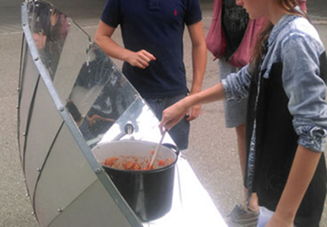

Activities
4.1 Activities
4.1.1 Bycicle Cinema, Disco and Games
One of the unique activities that Solare Zukunft offers is the use of bicycles, that are hooked up to a setup in order to convert the kinetic energy produced by those bikes into electrical energy and thus powering all the necessary equipment to watch movies or party at a disco or even play video games. The process is fairly similar for all of these; the bicycle cinema has 10 cyclists, who generate electricity for the projector, laptop and sound system at the same time, thus enabling a network-independent cinema experience, whereas the bicycle discos does it with 5 to 7 bicycles powering the sound system and disco lighting. As for the bicycle games the software that acts as the interface to the audience is being redesigned in this project. Here, it is equipped with masks. Each mask allows a different view of the generated energy/power. This means that performance can be displayed cumulatively, individually, or as a whole. And this results in the possibility of games in the form of competitions, simulating load curves, making energy and performance understandable through experience, or making it possible to experience the energy content of food or consumer goods. All of this is 100% self-sufficient in energy, leading to an increasing appreciation of electrical energy and thus sensitizing for a more responsible use. Lastly, the setup and condition of the bikes are of great importance, especially for the use of proper layout. Two trained people are required to set up and operate the bicycle activities. Setup and test run take about 2 hours, dismantling about an hour. The quality of the bikes is important, the gears must work well, there should be no eight or radial wobble in the wheels and no mountain bike profile should be fitted, otherwise a lot of energy is lost through friction and the running noise is too loud. It is important to ensure that a suitable floor is available. On the one hand, the roller trainers need non-slip contact, and, on the other hand, the floor should not be too sensitive. Non-slip underlays may be required.
4.1.2 Experiments about environmentally friendly mobility/traffic and renewable energies
One of the most important and favorable groups that is invited to participate in all these interactive and fun learning activities are small children. To better understand what changes our planet is going through and some of the possible solutions for them, in the context of climate change, energy saving and renewable energies, experiments are carried out on the various renewable energies: photovoltaics, solar thermal energy, wind energy and hydropower. Furthermore, a similar workshop that tries to convey the connection between combustion engines, CO2 emissions and climate change, takes place to teach small children about environmentally friendly ways of getting around. With the help of solar cars, air-powered cars, steamboats, the children can try out and observe different drive options themselves. While they experiment themselves with the possibilities of various renewable energies, they can even generate electricity for the electric train on an energy bicycle.
4.1.3 Building plug in and balcony solar devices
Solar energy is arguably the most abundant source of renewable energy and possibly the easiest to exploit. So, what’s better than teaching people how to build their own balcony solar system? After a lecture on the fascination of solar energy and on the technical, economic, and legal aspects of plug-in solar systems, an exclusive live workshop takes place on upcycling used solar modules into new balcony solar devices, with plugs, cables, micro-inverters, and solar modules being prepared and installed. There is hope to make the possibility of building new balcony solar devices from used solar modules accessible to an even broader public.
4.1.4 Solar food processing
Solare Zukunft emphasizes a lot on sustainable energy and especially on the effective use of solar energy. As a result, there is a need to identify the most effective solar processing technologies and products in terms of quality and cost effectiveness. One of the areas that they are trying to penetrate is the food market by exploiting developed technologies and using clean energy when producing or conserving food.
4.1.5 Solar cooking and baking and solar dehydrators
Solare Zukunft educates people how to build solar cooking boxes and dehydrators as well as display different types of solar cooker models. The solar cooking box is a wooden box with thermal insulation. The inner sheet metal is black to absorb the sun’s rays, which fall through the glass cover. When properly aligned the crate can reach temperatures of up to 150 degrees. There is, also, the parabolic mirror cooker, which, when correctly aligned, concentrates the sun’s rays to a focal point in the middle. With the use of both systems, anyone can cook stew, make popcorn, or fry eggs, while also bake bread or cakes, cook rice, potatoes and more.

Then there is the solar dehydrator, a tunnel under a film on a black background, where fruits and vegetables can be dried in about 10 hours, provided the sun is shining.
While the cooking is occurring, the theoretical background, the social and cultural significance of the use of solar energy in countries of the South, but especially in Central European latitudes, the economic and ecological advantages, and the practical functionality of the solar cooking box are explained, making this an unforgettable and memorable experience.
4.1.6 Arts and Crafts
A workshop where people of all ages, especially children, can come by and work with materials like wood and clay to create something out of the earth. This way people can spend time outdoors making something with their own hands from natural materials, therefore getting closer and appreciating the earth and planet more. Those creations can be decorative or practical, to be used as cups and utensils for an organic café, located inside the Sustainability Hub. They can also be simple toys for the children to play with and even be modified to fit in the “solar powered toys” workshop that Solare Zukunft hosts. Lastly, anything that takes shape within this workshop could be later exhibited in a flea market that again takes place in the Sustainability Hub.
4.1.7 Flea Market
It would be interesting if every week or month a sustainable flea market takes place in the premises of the sustainability hub. What makes it sustainable? It will promote sustainability in the sense that anything that is sold or exchanged is recyclable, from used clothes to second-hand books and toys. As it was mentioned above, creations from the “arts and Crafts” workshop can be exhibited here. A variety of seeds and starter plants that come from the sustainable garden of the Sustainability Hub can be sold or given to people, who would like to start their own garden at home. The benefits of hosting a flea market are the strengthening of the community, the suggestion that not everything needs to be bought brand new but rather reused and the conclusion that activities like these, which aim to promote sustainability and recycling, help the planet.
4.1.8 Organic Cafe
An amazing opportunity to make the Sustainability Hub an actual Hub, where people get together, hang out, and join in the activities/festivities while learning in the process is the inclusion of an “Organic Café”. This café should be fully sustainable, showcasing that it is achievable in reality and not just a concept. It can be powered by solar panels on a sunny day or a generator that is hooked to bikes, converting kinetic energy to electric. The water that is going to be used, will come from tanks of rainwater that will be filtered to become drinkable. Food and baked goods, made from the solar cooking workshop can be displayed here. The cups, glasses bowls, plates, and utensils will be made by the people of the community as already mentioned from wood and clay. The café itself should be in the form of a shack/booth or the inside kitchen can be modified to serve both purposes. It would be nice if a small group of tables and chairs is available, but the idea is that most of the people can take a stroll with their order through the garden, sitting on a bench, and enjoying the nature surrounding them.
4.1.9 General once-in-a-while festivities
Given the open and available space that The Sustainability Hub provides, it can host itself various festivities other than workshops. With the Organic Café up and running, the beautiful sustainable garden surrounding the area, and hundreds of people crowding the place the Sustainability Hub could arrange small-scale concerts, solar art exhibitions, theatre plays or even interactive theatre and musical “workshops”, elevating itself from a unique, different, and sustainable school to an entertaining and fun Hub where anyone in Freiburg can join not only to learn but socialize as well.